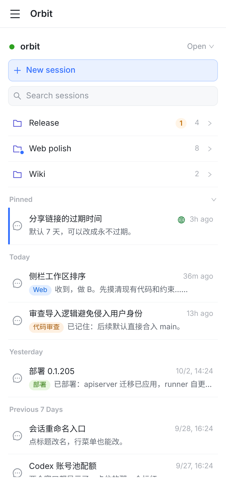
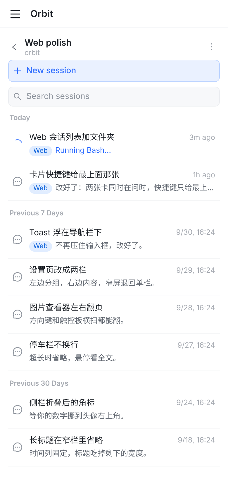
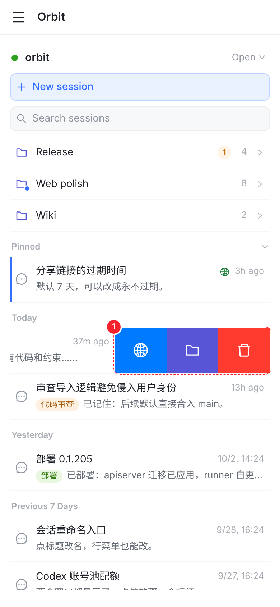
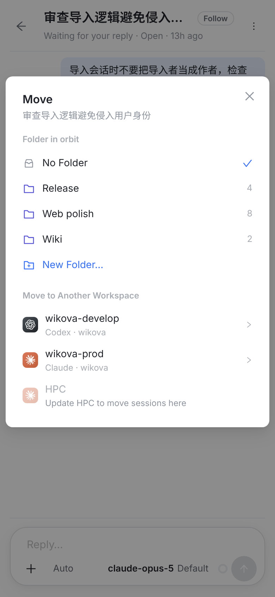

在手机浏览器里，Web 的会话列表本来就是单栏，触摸左右滑的手势也已经照 iOS 做了，所以这里直接套 iOS 的样子。截图里的页面宽 390，和 iPhone 相同。




动手之前要先改设计文档 docs/session-folders-move-design.md：第 1 节和 §5.7 现在写的是“web 照常平铺列表”“这一期不做 web 的 Move 入口与文件夹显示”，要把 web 从“不做”里拿出来，入口和交互按这三张图写进去。服务端的接口都已经有了，这次只改 Web 前端。